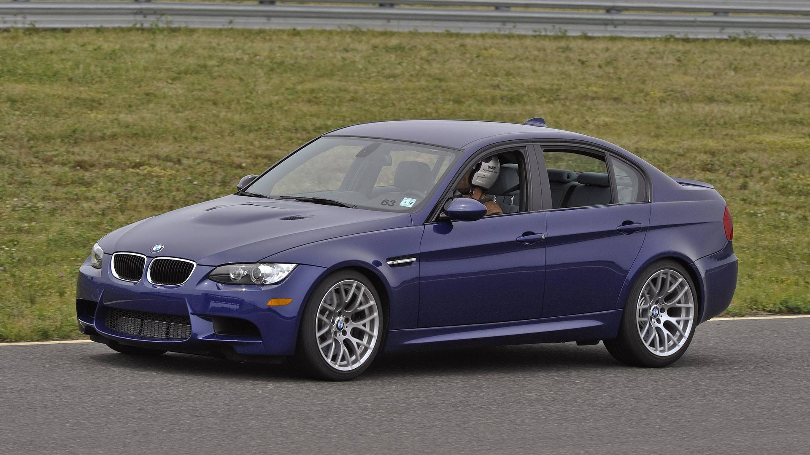

Весной 2014 года было представлено пятое поколение М3, которое выпускается только с кузовом седан.
Купе и кабриолеты с этого момента продаются под собственным именем М4. Кроме того, M3 впервые получил
собственный код разработки: вместо аббревиатуры F30 теперь значиться F80.
Модели M4 также получили собственные имена (купе — F82, кабриолет — F83).
В сентябре 2020 года было представлено шестое поколение.